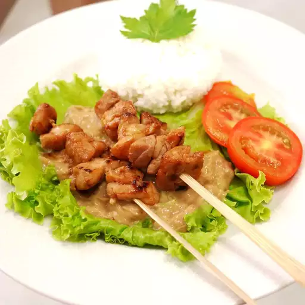

Back to homepage
Indonesian Satay Recipies

This is an original Indonesiaan satay. This is very delicious food from Indonesia
Satay Ingredients
- 3 tablespoons soy sauce
- 3 tablespoons tomato sauce
- 1 tablespoons peanut oil
- 2 cloves garlic, peeled and minced
- 1 pinch ground black pepper
- 1 pinch ground cumin
- 6 skinless, boneless chicken breast halves - cubed
- 1 tablespoon vegetable oil
- 1/4 cup minced onion
- 1 clove garlic, peeled and minced
- 1 cup water
- 1/2 cup chunky peanut butter
- 2 tablespoons soy sauce
- 1 tablespoons white sugar
- 1 tablespoons lemon juice
- skewers
How to Make Satay
-
Step 1 In a bowl, mix soy sauce, tomato sauce, peanut oil, garlic, black pepper, and cumin. Place chicken into the mixture, and stir to coat. Cover, and marinate in the refrigerator for at least 15 minutes, but not
overnight. This will make the meat too dark.
- Step 2 Preheat the grill for high heat.
-
Step 3 Heat vegetable oil in a saucepan over medium heat, and saute onion and garlic until lightly browned. Mix in water, peanut butter, soy sauce, and sugar. Cook and stir until well blended. Remove from heat, mix
in lemon jice, and set aside.
- Step 4 Lightly oil the grill grate. Thread chicken onto skewers, and discard marinade. Grill skewers about 5 minutes pers side, until chicken juices run clear. Serve with the peanut sauce.